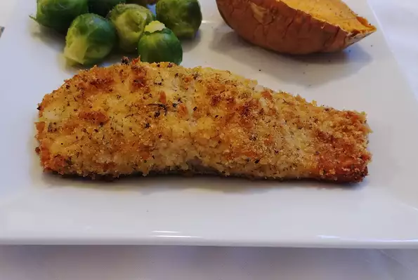

Lemon Panko Crusted Salmon

Ingredients
- 6 tablespoons panko bread crumbs
- 1 tablespoon grated Parmesan cheese
- ½ teaspoon lemon pepper
- ½ teaspoon dried thyme
- ½ teaspoon dried parsley
- ⅛ teaspoon granulated garlic
- ⅛ teaspoon lemon zest
- 2 (4 ounce) salmon fillets
- 1 tablespoon butter, melted
Directions
-
Preheat oven to 375 degrees F (190 degrees C).
Line a baking sheet with aluminum foil.
-
Combine panko bread crumbs, Parmesan cheese, lemon pepper, thyme, parsley,
granulated garlic, and lemon zest in a bowl.
Arrange salmon on the prepared baking sheet and brush with melted butter.
Sprinkle bread crumb mixture evenly over salmon fillets.
-
Bake in the preheated oven until salmon flakes easily
with a fork, 20 to 25 minutes.